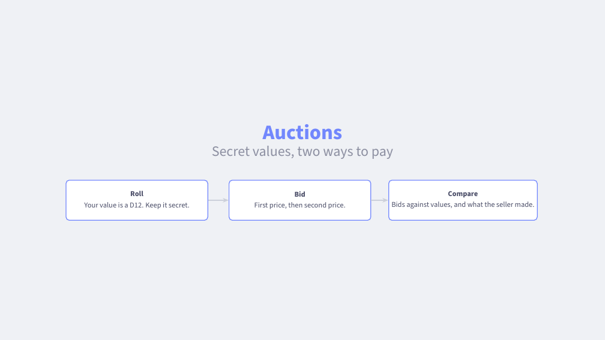
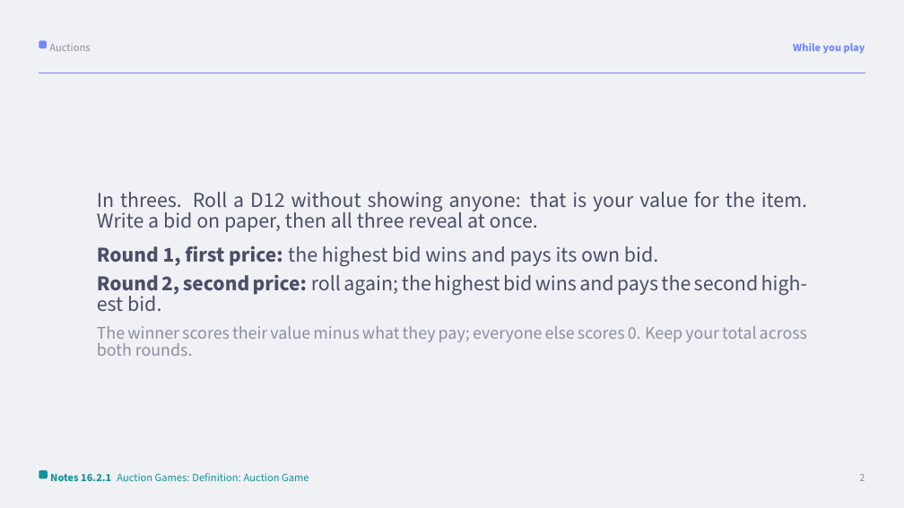
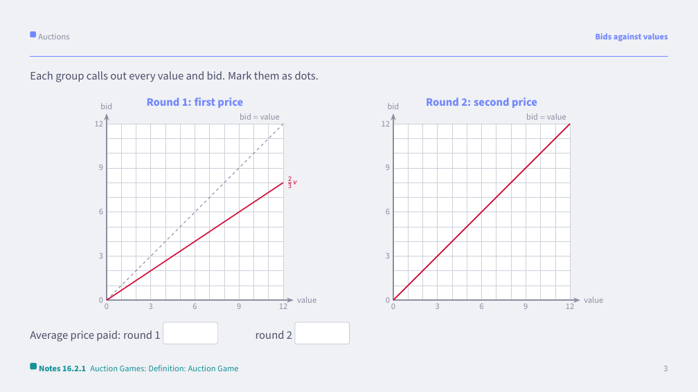
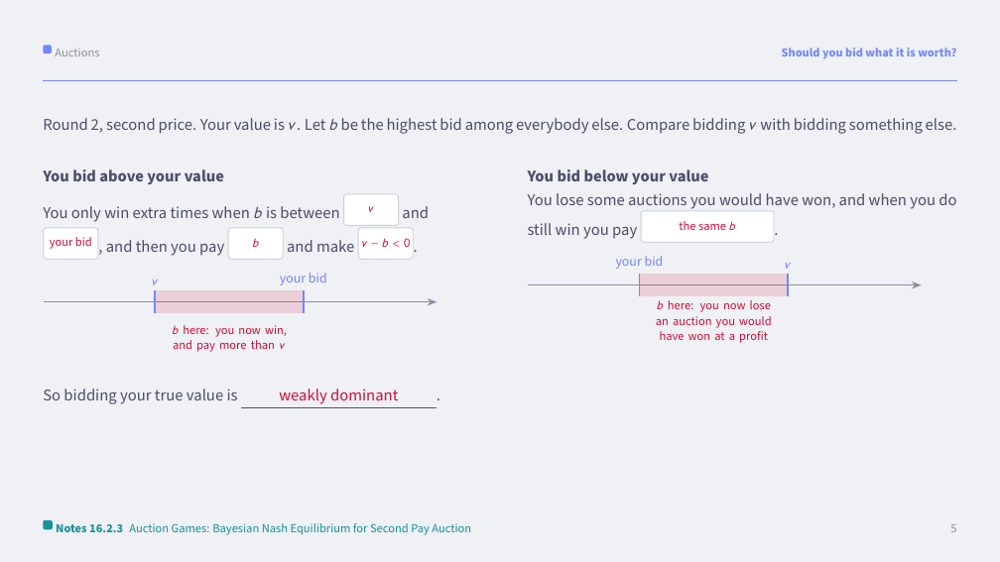
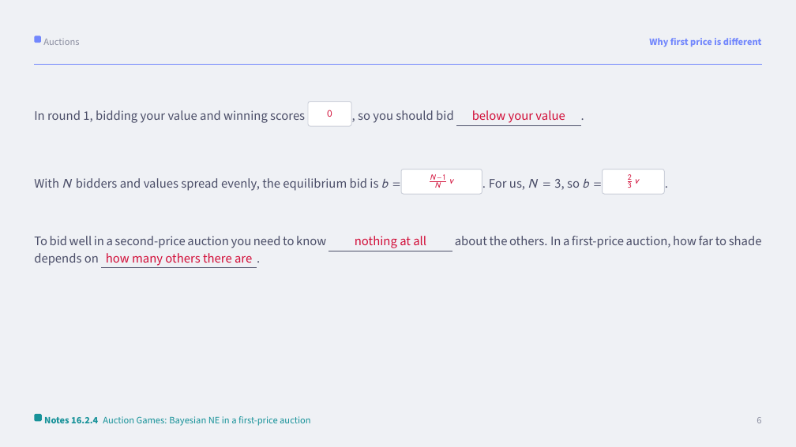
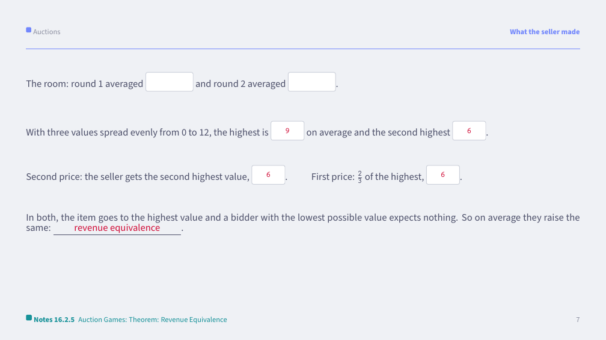
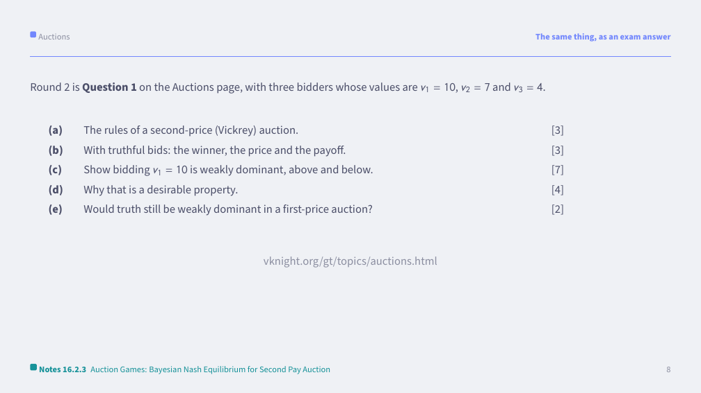

Goal. Compare a first-price and a second-price sealed auction with private values, see bidders shade in one and bid their value in the other, and find that the seller makes about the same from both.
The deck. There is a write-on deck at /decks/auctions/main.pdf: the rules on a "While you play" slide, two grids of bid against value (one per round) with average price boxes, the rules and payoff left blank, the two cases of the weak dominance argument on number lines, the shaded first-price bid, and the seller's revenue in each format.
Every slide of the deck names the numbered section of the notes it is reading, and the last slide gathers them into one table, marks what is examinable and sets the reading for the next class. Leave the "While you play" slide up while the room plays.
Requires one D12 per student, or per group passed round. The class already ran the dollar auction, where everyone's value is the same; here each value is private, which is the setting of the chapter and of Question 1.
Put the room in threes. Each student rolls a D12 without showing anyone: that is their value for the item. Each writes a bid on paper and the three reveal at once.
Keep totals across both rounds and give the bribentives to the top scorers. Then collect a handful of groups' values and bids for each round and mark them on the two grids: second-price bids should sit near the line bid = value and first-price bids below it. Ask each group for the price paid in each round and write the two averages in.
Work through the Auctions chapter.
Discussion Point: After the definition of an auction, ask what the rules are for the sealed auction we just played.
Discussion Point: After two theorems ask why I chose the auction I did?
Close on the last slide. It names what the class was reading and sets the reading for next time. Then run the quick quiz from the Auctions topic page: five questions on the screen, answered by a show of hands. It takes five minutes and tells us both what landed.
The values, bids and average prices come from the room. These are the rest.
The rules. Everyone submits one sealed bid without seeing anyone else's, and the highest bidder wins. In a first-price auction the winner pays their own bid; in a second-price auction they pay the second highest bid. With value \(v\), the second-price payoff is \(v\) minus the second highest bid for the winner and \(0\) for everyone else.
Should you bid your value? Write \(v\) for your value and \(b\) for the highest bid among everybody else. You win when your bid beats \(b\), and you then pay \(b\) whatever you bid, so your bid only changes whether you win, not what you pay.
Neither can do better, so bidding your true value is weakly dominant.
First price. Bidding your value and winning scores \(0\), so you shade below it. With \(N\) bidders and values uniform, the equilibrium bid is \(b = \frac{N - 1}{N}v\): the book states it for values on \([0, 1]\), and it scales to any interval starting at \(0\). With \(N = 3\), \(b = \frac{2}{3}v\), the line drawn on the first-price grid. In a second-price auction you need to know nothing about the others; in a first-price auction how far to shade depends on how many others there are.
What the seller made. With three values uniform on \([0, 12]\), the highest averages \(9\) and the second highest \(6\). The second-price seller gets the second highest value, \(6\) on average; the first-price seller gets \(\frac{2}{3}\) of the highest, also \(6\). That is revenue equivalence. A D12 is discrete, so the room's exact targets are slightly different: \(6.5\) for the second-price round and about \(6.3\) for the first-price round if everyone bids \(\frac{2}{3}v\). Either way the two averages should be close, and a gap of a pound or so between them is noise from a few dozen groups.
The activity above is written up as a marked exam question: Question 1 (the in-class activity) on the Auctions page, with a full worked solution. Closing the loop here is the step that helps students who find exams hard: work through that question together, or set it as the immediate follow-up, so they see the game they just played turned into a full-mark answer.
Every page of the deck with its boxes completed, built from the same source as the blank deck we project. Click a page to see it full size.







General email templates to send before and after this class. Fill in the bracketed placeholders before sending.
Hi all,
A reminder that our next Game Theory class covers Auctions.
All of the course materials, including the relevant chapter, are available
at https://vknight.org/gt/. It is worth skimming the chapter beforehand.
See you in class,
Vince
Dear all,
Thanks for your work in today's class on Auctions.
A recording is available here [RECORDING LINK] and on Learning Central.
All class resources are available at https://vknight.org/gt/.
Thanks,
Vince